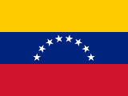
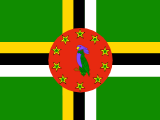

Dictamen del décimo hombre: el criterio puede resolverse con un documento anterior a la ventana, y la Oficina lo concede entero. El criterio pregunta si al 8/12 alguna fuente muestra un acto oficial DE CUALQUIERA DE LOS DOS ESTADOS que enuncie dos de cuatro términos, y no exige que el acto sea bilateral ni nuevo. El Decreto Legislativo 679 de El Salvador, publicado en el Diario Oficial el 30/9/2026 y vigente desde el 2/10, ya enuncia dos de esos cuatro: la vigencia de doce meses prorrogables y el estatuto del personal. Leído literalmente, un resolutor competente falla el juicio en diciembre con un documento de septiembre: la alerta nace falsa. NO SE CORRIGE EL CRITERIO, se descarta la alerta. Corregirlo ahora, sabiendo ya qué documento lo satisface, es exactamente la maniobra que la regla de la casa prohíbe: el criterio se fija al nacer y no se reescribe cuando se descubre qué lo cumple. Es el mismo descarte que la dirección resolvió el 2/10/2026 sobre 2026-10-02-HTI-S. Y hay dos objeciones más del dictamen que la Oficina también concede: el hecho publicado no derivaba de la señal -el pico eran cinco registros de prensa de protesta que, según el propio fundamento, ni apuntaban contra el Gobierno- y la banda publicada no pasó por el panel ciego, porque al anunciar hechos distintos y no transferirse la banda, probable con confianza media quedó siendo una sola lectura. Se asienta además la corrección de hecho del dictamen: el viaje del Primer Ministro del 16/11 no se frustró, se delegó en el ministro de Justicia y Seguridad Pública, presente en San Salvador el 16 y 17/11. La lectura del analista de contexto queda en el expediente como medición y como antecedente: la negativa expresa del vicepresidente salvadoreño del 16/11 a divulgar el convenio es el mejor argumento del juicio y merece una alerta propia, nacida de un disparador que le corresponda y con un criterio que enumere los canales de publicación DE LOS DOS Estados, gaceta oficial y órgano legislativo incluidos.
Ni el Poder Ejecutivo haitiano ni el Gobierno de El Salvador harían público, entre el 18 de noviembre y el 8 de diciembre de 2026 inclusive, el instrumento bilateral que rige el despliegue militar salvadoreño en Haití, ni un acto oficial que enuncie sus términos esenciales.
Confianza media · plazo 21 días · vence el 2026-12-08 · fuente única
HECHO: desde el 23 de octubre de 2026 hay tropa salvadoreña desplegada en Puerto Príncipe —450 efectivos en esa fecha según Rezo Nòdwès del 24/10/2026, más de 2.000 según la cifra del Ministerio de Relaciones Exteriores salvadoreño recogida por las Naciones Unidas el 3/11/2026 y reproducida por France 24 el 11/11/2026—, desplegada tras la emboscada del 18 de octubre de 2026 en que desaparecieron cuatro militares salvadoreños (CNN, 29/10/2026). HECHO: las Naciones Unidas señalaron que la gran mayoría de esos efectivos opera fuera del mando de la Gang Suppression Force creada por la resolución 2793 del Consejo de Seguridad (CNN, 29/10/2026; France 24, 11/11/2026). HECHO: el 9 de noviembre de 2026 Amnistía Internacional reclamó a ambos Gobiernos que publiquen el acuerdo que encuadra el despliegue y que precisen las reglas de supervisión, de uso de la fuerza y de responsabilidad (RCI y RHI News, 9–10/11/2026); a la fecha de corte ninguno de los dos lo publicó. HECHO: el viaje del Primer Ministro haitiano a El Salvador previsto para el lunes 16 de noviembre de 2026, cuyo objeto declarado era discutir el futuro del despliegue, fue anulado, y la duración y los términos quedaron sin resolver (qz.fr y RHI News, 16/11/2026); ese mismo día el ministro de Seguridad haitiano elogió públicamente el despliegue (Reuters vía US News, 16/11/2026). JUICIO: la vía institucional que obligaría a publicar está cerrada, y por eso el silencio no sería coyuntural sino estructural — Haití no tiene Parlamento en funciones desde enero de 2023, de modo que no hay Asamblea Nacional que ratifique un tratado ni que interpele al Ejecutivo, y el Ejecutivo es un Conseil des ministres encabezado por el Primer Ministro, que asumió las funciones presidenciales al terminar el mandato del Conseil présidentiel de transition el 7 de febrero de 2026 (Ministerio de Europa y de Asuntos Exteriores de Francia, febrero de 2026; informe del Secretario General de la ONU S/2026/325, 14/4/2026). JUICIO: los despliegues extranjeros anteriores en Haití tuvieron marco público porque eran de mandato onusiano y el Consejo de Seguridad publica por procedimiento propio; éste es bilateral y fuera de ese mandato, con lo cual la publicación depende de la voluntad de dos Ejecutivos que hasta hoy no la tuvieron. CONTEXTO DE LA SEÑAL: el pico de eventos de protesta del 10/11/2026 no marcaría presión callejera contra el Gobierno sino lo contrario — las jornadas de movilización del 17 y 18 de noviembre, a las que la Asociación de Propietarios y Choferes de Haití llamó a sumarse, son en apoyo de la ofensiva contra las bandas y contra sus financiadores y protectores (Rezo Nòdwès, 16/11/2026)—, y el 18 de noviembre es el aniversario de la batalla de Vertières, fecha de movilización en el calendario histórico haitiano. JUICIO: ese respaldo de calle es precisamente lo que reduciría el incentivo de ambos Ejecutivos a someter el despliegue a un marco escrito y exigible. CORRECCIÓN AL EXPEDIENTE: el apartado 3 afirma que no hay fechas institucionales en ±60 días, y no es así — el 15 de noviembre de 2026 cerró la inscripción de candidaturas, el 15 de diciembre de 2026 el Conseil Électoral Provisoire debe exhibir la lista provisional con 48 horas de impugnación y el 11 de enero de 2027 la lista definitiva, según el calendario revisado el 28 de octubre de 2026 sobre el decreto electoral del 6 de octubre de 2026, que llevó la primera vuelta al 18 de julio de 2027 (La 1ère/franceinfo, Juno7 y Haitian Times, 29/10 y 16/11/2026)—. El nodo del 15 de diciembre cae 28 días después del nacimiento de esta alerta y queda fuera del plazo máximo de 21 días: se recomienda alerta sucesora que lo abrace.
---
## La elección de la Oficina
Los dos analistas anunciaron hechos distintos, así que no rige la banda más baja: la Oficina elige, y la banda viaja con el hecho elegido. El consolidador dejó «improbable» porque es la menor de las dos, pero esa banda pertenecía al hecho del analista de indicadores, no al que se publica.
Se elige la formulación del analista de contexto, y el motivo no es de preferencia sino de doctrina ya resuelta. El analista de indicadores anunció un hecho sobre el propio indicador de FEMÓNOE —que la serie volvería o no a cierto valor—. La dirección ya rechazó ese molde el 13/10/2026 al descartar la alerta 2026-10-10-MEX-S: FEMÓNOE prediciendo su propia serie. Una plataforma de alerta temprana anuncia hechos del mundo, no el comportamiento futuro de su propio contador; y un lector al que se le anuncia que un contador va a subir no recibió ninguna advertencia sobre la región. El propio analista de indicadores de Belice señaló esta objeción contra su propio molde al entregar, y la sostuvo sólo porque es lo único que su instrumento alcanza a sostener. Tiene razón en lo segundo, y eso es exactamente por qué su lectura entra al expediente como medición y no como hecho anunciado.
Lo que la lectura de indicadores aporta, y queda en el expediente: la señal ya decayó —en los dos casos— y la tasa base condicionada al estado real de hoy es más baja que la incondicional. Eso no cambia el hecho elegido, pero sostiene la confianza en media y no más arriba.
Criterio de resolución, fijado al nacer la alerta. Al vencer se consultan, en este orden: 1) los comunicados de la Primature de la République d'Haïti y del Ministère des Affaires Étrangères et des Cultes; 2) Le Moniteur, journal officiel de la République, en sus ediciones del período; 3) los canales oficiales de la Presidencia de El Salvador, del Ministerio de Relaciones Exteriores y del Ministerio de la Defensa Nacional de El Salvador; 4) subsidiariamente, Le Nouvelliste, AlterPresse, HaitiLibre y Rezo Nòdwès, y agencias internacionales, pero sólo cuando reproduzcan o citen el acto oficial. EL HECHO ANUNCIADO SE CUMPLE si al 8 de diciembre de 2026, 23.59 hora de Puerto Príncipe, ninguna de esas fuentes muestra el texto del instrumento bilateral ni un acto oficial de cualquiera de los dos Estados que enuncie al menos DOS de estos cuatro términos: a) vigencia o duración del despliegue; b) cadena de mando y autoridad que dirige a la tropa extranjera; c) estatuto jurídico de los efectivos en territorio haitiano —inmunidades, porte de armas, facultad de detener—; d) régimen de responsabilidad por daños o por violaciones de derechos. EL JUICIO QUEDA POR FALLADO si se publica el texto, o si un acto oficial enuncia dos o más de esos cuatro términos. NO CUENTAN, y por lo tanto no fallan el juicio: las declaraciones de respaldo, agradecimiento o bienvenida sin términos; las cifras de efectivos desplegados o de operaciones realizadas; los partes de operaciones y los comunicados conjuntos sin contenido normativo; las resoluciones del Consejo de Seguridad relativas a la Gang Suppression Force, que es una fuerza distinta y de mandato propio; y las descripciones del acuerdo hechas por terceros —prensa, organismos, organizaciones— sin acto oficial que las respalde. Fecha de corte de la recolección: 17 de noviembre de 2026.
Sin dictamen del décimo hombre: esta alerta no puede publicarse.
Lo que no se pudo cerrar
Un juicio sin sus brechas declaradas no se publica. Éstas son las de esta alerta, con el puesto que las declaró — no es lo mismo que el vacío lo diga quien sostiene el juicio o quien lo impugna.
- No se pudo establecer si los cinco registros del 9 y los cinco del 10 de noviembre corresponden a cinco episodios o a un episodio cubierto por cinco cabeceras. La serie cuenta notas de prensa codificadas con la raíz 14 de CAMEO y no hechos verificados en el terreno, y en los datos de la casa no existe hoy una segunda familia viva que permita separarlos. Es el vacío que más pesa sobre la confianza. No se pudo corroborar con una segunda familia, y se verificó por qué: acled_protesta termina para Haití el 20 de octubre de 2025 y sus ceros posteriores no acreditan ausencia sino corte de entrega, y redes_gobernabilidad está inutilizable como corroboración porque el 9 de noviembre dio un escalón simultáneo en 27 de los 33 Estados; umbrales 1.3 ya la declaraba inmadura hasta el 16 de diciembre de 2026 y el escalón nuevo obliga a correr esa fecha, lo que se reporta a la Oficina como hallazgo y no como juicio. No se pudo medir el efecto del calendario electoral, que es el riesgo al alza al que este puesto no puede ponerle precio: calendario.json trae para Haití únicamente la elección del 18 de julio de 2027, de modo que el módulo informa «sin fechas institucionales en ±60 días» mientras la prensa del propio expediente muestra un proceso en curso —cierre del registro de adherentes fijado por el CEP para el 8 de noviembre, registro preliminar de candidaturas presidenciales, ajustes presupuestarios del CEP con el Ministerio de Economía—. Mejora concreta para el robot: mientras esos hitos no estén en el calendario, el detector va a leer noviembre con los umbrales estrictos y no con los del calendario. Y aviso al panel: si el analista de contexto establece una convocatoria con fecha pública dentro de la ventana anunciada, la banda correcta es la inmediatamente superior. No se pudo medir la geografía del episodio: la serie es nacional y no tiene capa subnacional, de modo que un episodio en Puerto Príncipe y uno extendido dan el mismo número. No se pudo verificar la serie contra el archivo original de GDELT: la verificación se hizo contra los datos de la casa, el registro de cambios del colector y su documentación interna, sin navegar, y el expediente existe para eso; lo que se afirma sobre la fuente tiene esa procedencia y no otra. No se pudo usar la capa de prensa del expediente para cotejar el episodio: de las cuarenta entradas de los días 9 y 10, la mayoría es agenda deportiva, ambiental y diaspórica, y ninguna describe una movilización, lo que no refuta la señal pero tampoco la sostiene. No hay antecedente propio de este Estado en este eje: las dos alertas anteriores de Haití, del 2 y del 3 de octubre, son de seguridad y de entorno informativo y están descartadas. La calibración del puesto no alcanza para corregir la banda: de diez lecturas anteriores sólo dos están resueltas. Lo que elevaría esta confianza de baja a media es concreto y medible: una segunda familia viva sobre Haití en el eje gobernabilidad que cubra del 18 de noviembre al 1.º de diciembre —la reapertura de ACLED, la familia de redes con línea de base limpia, o un recuento de la propia autoridad recogido por el vigía—, y cualquier instrumento que permita distinguir un hecho replicado de varios hechos distintos.lo declaró el analista de indicadores
- No abrí en primario Le Moniteur ni los sitios de la Primature y del Ministère des Affaires Étrangères et des Cultes de Haití, de modo que no puedo excluir que exista ya un arrêté o un acuerdo publicado y no indexado por buscadores: es el vacío que más afecta al juicio. No leí en documento original las resoluciones del Consejo de Seguridad citadas (2699 y 2793) ni el acuerdo recíproco Haití-Kenia; sus términos entran referidos por fuentes secundarias y por el informe del Secretario General S/2026/325, que tampoco abrí en primario. Dos fuentes que habrían cerrado el cuadro devolvieron error 403 en esta sesión: la ficha del calendario electoral de HaitiLibre y el análisis de The New Humanitarian del 11/11/2026. No consulté prensa en criollo haitiano ni radio local, exigencia de la casa para Haití, de modo que falta la lectura del terreno en la lengua de uso. No establecí si el viaje del Primer Ministro anulado el 16 de noviembre fue reprogramado, ni si hay encuentro bilateral agendado dentro de la ventana: es el dato que más movería la banda y no lo tengo. No establecí la posición oficial de la Cancillería salvadoreña frente al reclamo de publicación, ni si la nota diplomática estadounidense sobre falta de coordinación entre la tropa salvadoreña y la Gang Suppression Force —reportada por terceros— existe como acto formal. No pude contar los acuerdos bilaterales de seguridad publicados por el Ejecutivo haitiano desde abril de 2024, con lo cual la tasa base de la clase pertinente queda sin construir. No verifiqué en fuente oficial el carácter feriado del 18 de noviembre ni la norma que lo fija, aunque la fecha consta como jornada de movilización convocada. Tampoco verifiqué en el sitio del Conseil Électoral Provisoire las fechas del calendario revisado el 28 de octubre de 2026, que tomo de tres fuentes de prensa concordantes; queda sin resolver la discrepancia entre esas fuentes y una que sostiene que la inscripción de candidaturas corre hasta el 9 de febrero de 2027. Lo que elevaría esta confianza a alta: lectura en primario de Le Moniteur y de los comunicados de las dos cancillerías en el período, y confirmación oficial de si el encuentro bilateral se reprogramó dentro de la ventana.lo declaró el analista de contexto
- No se halló acto oficial, texto ni comunicado de ninguno de los dos Estados que publique el instrumento bilateral que rige el despliegue, ni anuncio de que vaya a publicarse en una fecha determinada. La tesis de este dictamen no se apoya en una publicación anunciada: se apoya en un acto ya publicado que el criterio, tal como está escrito, admite.lo declaró el décimo hombre
- No se halló convocatoria con fecha pública de encuentro bilateral entre el Primer Ministro haitiano y el Presidente salvadoreño dentro de la ventana.lo declaró el décimo hombre
- No se halló pieza en trámite en la Asamblea Legislativa salvadoreña sobre ampliación de efectivos, sobre el contingente que opera fuera de la GSF ni sobre prórroga anticipada, y se buscó expresamente. La segunda razón describe una vía acreditada y una discusión en curso, no un trámite abierto.lo declaró el décimo hombre
- No se verificó en primario la afirmación, recogida en resúmenes de cobertura francófona, de que el Primer Ministro haitiano habría declarado el 3/11/2026 que el Estado haitiano dirige las fuerzas extranjeras en el país; al abrir la nota que la soportaba, lo que consta es un mensaje del 10/11/2026 en su cuenta personal, de agradecimiento y sin términos. El dato queda marcado, con credibilidad descendida, y ningún eslabón de este dictamen depende de él.lo declaró el décimo hombre
La información se cerró el 2026-11-17. Es el corte más temprano de los tres puestos: el juicio descansa en los tres a la vez.





